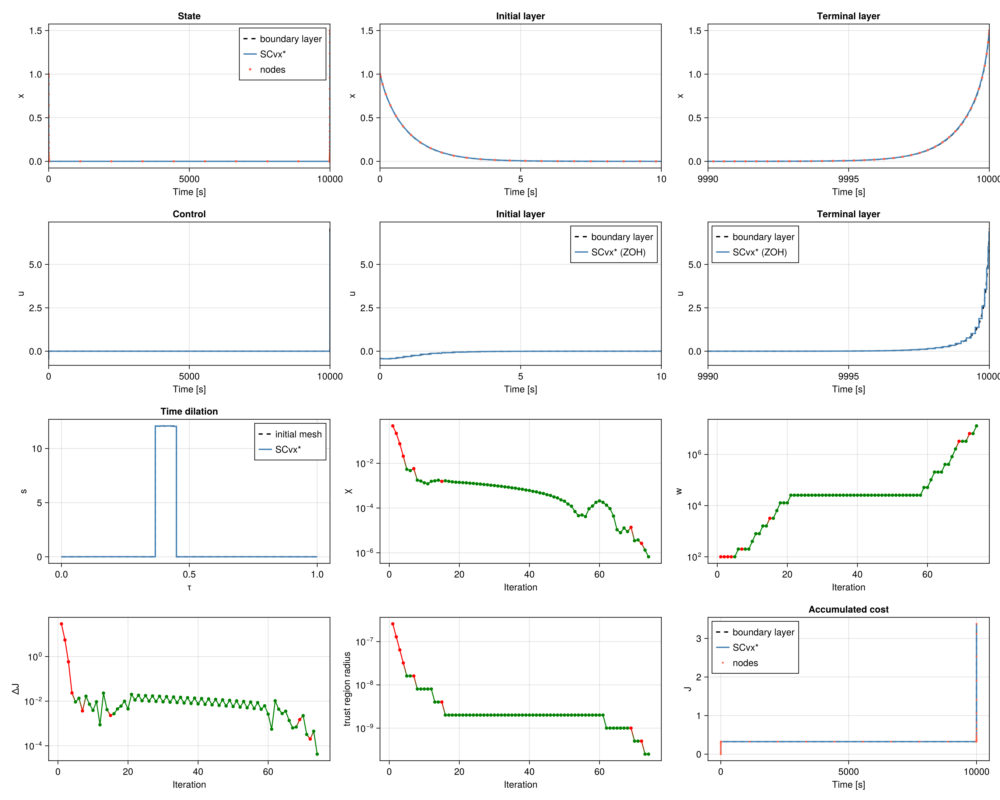

Hypersensitive
Hypersensitive control from the ICLOCS2 example, originally Rao and Mease, Optim. Control Appl. Meth. 21(1), 2000.
Problem
$
\begin{aligned} \underset{x(\cdot),\,u(\cdot)}{\operatorname{minimize}} \quad & \frac12 \int0^{tf} \bigl(x(t)^2 + u(t)^2\bigr)\, dt \ \text{subject to} \quad & \dot x = -x^3 + u, \ & x(0) = 1, \quad x(tf) = 1.5, \ & tf = 10000. \end{aligned} $
The state and the control are unbounded. On this horizon the solution is two boundary layers joined by $x \approx 0$. Each layer rides a zero-energy manifold of the Hamiltonian system, $\lambda = -x^3 \pm x\sqrt{x^4+1}$, with $u = -\lambda$. The plus sign is the initial layer and the minus sign is the terminal layer:
$
\begin{aligned} x{\mathrm{init}}(t) &= \bigl(\sinh(2t + \operatorname{asinh} 1)\bigr)^{-1/2}, \ x{\mathrm{term}}(t) &= \bigl(\sinh\bigl(2(t_f - t) + \operatorname{asinh}(1/1.5^2)\bigr)\bigr)^{-1/2}. \end{aligned} $
The initial control starts at $1 - \sqrt{2} \approx -0.414$ and the terminal control ends near $7.07$. Integrating $\tfrac12(x^2+u^2)$ along the two manifolds gives a cost of about $3.362$.
Transcription
SCPLib integrates in normalized time $\tau \in [0, 1]$. The state is $[x, J, \theta]$ with $\theta = t / t_f$, and the controls are $u$ and a dilation $s = (dt/d\tau) / t_f$:
$
\begin{aligned} \frac{dx}{d\tau} &= s\, tf\,(-x^3 + u), \ \frac{dJ}{d\tau} &= s\, tf\, \tfrac12\bigl(x^2 + u^2\bigr), \ \frac{d\theta}{d\tau} &= s. \end{aligned} $
The objective is $J(1)$. Time is fixed by $\theta(0) = 0$ and $\theta(1) = 1$. The dilation stays in $[10^{-8},\, 30]$, which is wide enough for the coast intervals below. $x$ and $u$ stay free, as in ICLOCS.
Initial guess
The terminal control climbs from about $3$ to $7$ in the last tenth of a second, so the mesh packs nodes into both layers and coasts where the state is zero. With a normalized coordinate $s \in [0, 1]$ on a segment $[t_a, t_b]$,
$
\begin{aligned} t{\mathrm{start}}(s) &= ta + (tb - ta)\sin^2!\bigl(\pi s / 2\bigr), \ t{\mathrm{end}}(s) &= ta + (tb - ta)\cos^2!\bigl(\pi(1-s)/2\bigr). \end{aligned} $
The first map clusters at $t_a$ and the second at $t_b$. The nodes are $41$ points of $t_{\mathrm{start}}$ on $[0, 15]$, eight uniformly spaced points on $(15,\, 9985)$, and $61$ points of $t_{\mathrm{end}}$ on $[9985,\, 10000]$. Normalized time is uniform, $\theta_k = t_k / t_f$, and the dilation guess is the slope of that mesh,
$
sk = \frac{\theta{k+1} - \thetak}{\tau{k+1} - \tau_k}. $
State nodes sit on the boundary layer, $x_k = x_{\mathrm{init}}(t_k) + x_{\mathrm{term}}(t_k)$, with $J_1 = 0$. On each interval the control is the constant $u$ that carries $x_k$ to $x_{k+1}$ under $\dot x = -x^3 + u$. Newton starts from
$
u = \frac{x{k+1} - xk}{\Delta t} + \Bigl(\frac{xk + x{k+1}}{2}\Bigr)^3 $
and $J$ accumulates $\tfrac12\int(x^2+u^2)\,dt$ of that same transfer.
Solve
SCvx* linearizes the zero-order-hold dynamics about this reference and solves the convex subproblem with Clarabel. Trust-region radii on $\theta$ and $s$ scale with the local mesh width ($\Delta\theta$ is a quarter of the neighboring spacing, $\Delta s = 0.02\, s_k$), with $\Delta x = 0.05$, $\Delta J = 0.2$, and $\Delta u = 0.2$. The radii stay at those sizes ($\alpha_2 = 1$), so the terminal nodes, spaced by about $0.01\,\mathrm{s}$, remain inside the spike.
The solve is optimal after $74$ iterations. The discrete cost is $3.378$, and the dynamics defect is about $7\times 10^{-7}$.
File: examples/hypersensitive/ex_scvxstar_hypersensitive.jl
"""Hypersensitive optimal control with SCvx*
ICLOCS2 hypersensitive problem (Rao and Mease, Optim. Control Appl. Meth. 21, 2000):
http://www.ee.ic.ac.uk/ICLOCS/ExampleHypersensitive.html
Minimize ½∫(x² + u²) dt subject to ẋ = -x³ + u, with x(0) = 1, x(t_f) = 1.5,
and t_f = 10000 fixed. The state and the control are unbounded.
The state here is ``[x, J, θ]`` with ``θ = t / t_f`` and the controls are ``u``
and a dilation ``s = (dt/dτ) / t_f``. Normalized time runs over ``τ ∈ [0, 1]``,
so every trust-region variable stays O(1). The initial mesh clusters nodes
in both boundary layers.
On this horizon the solution is two non-overlapping boundary layers joined by
x ≈ 0. Each layer rides a zero-energy manifold of the Hamiltonian system,
λ = -x³ ± x√(x⁴ + 1), with the sign selecting the initial or terminal layer.
"""
using Clarabel
using ForwardDiff
using CairoMakie
using JuMP
using LinearAlgebra
using OrdinaryDiffEq
include(joinpath(@__DIR__, "../../src/SCPLib.jl"))
# -------------------- problem data (ICLOCS2) -------------------- #
struct HypersensitiveParams
tf::Float64
end
const tf = 10000.0
const x0 = 1.0
const xf = 1.5
params = HypersensitiveParams(tf)
# Transcription bounds. ICLOCS leaves x and u free. s stays positive so that
# time increases; the upper bound sits above the coast intervals of the mesh.
const s_min = 1e-8
const s_max = 30.0
const θ_min, θ_max = 0.0, 1.0
function eom!(dx, x, pu, t)
(; params, u) = pu
s = u[2]
dx[1] = s * params.tf * (-x[1]^3 + u[1])
dx[2] = s * params.tf * 0.5 * (x[1]^2 + u[1]^2)
dx[3] = s
return
end
# Zero-energy boundary layers. φ > 40 underflows the state to zero.
function x_init(t)
φ = 2 * t + asinh(1 / x0^2)
φ > 40 && return 0.0
return 1 / sqrt(sinh(φ))
end
function x_term(t)
φ = 2 * (tf - t) + asinh(1 / xf^2)
φ > 40 && return 0.0
return 1 / sqrt(sinh(φ))
end
function u_of_x(x, terminal::Bool)
x == 0 && return 0.0
root = sqrt(x^4 + 1)
return terminal ? x^3 + x * root : x^3 - x * root
end
function x_layer(t)
return x_init(t) + x_term(t)
end
function u_layer(t)
return u_of_x(x_init(t), false) + u_of_x(x_term(t), true)
end
# ∫ λ dx on the initial manifold, and ∫ -λ dx on the terminal manifold.
function cost_init_to(x)
x == 0 && return 0.0
return -x^4 / 4 + (x^2 * sqrt(x^4 + 1) + asinh(x^2)) / 4
end
function cost_term_to(x)
x == 0 && return 0.0
return x^4 / 4 + (x^2 * sqrt(x^4 + 1) + asinh(x^2)) / 4
end
function J_layer(t)
return (cost_init_to(x0) - cost_init_to(x_init(t))) + cost_term_to(x_term(t))
end
const J_analytical = cost_init_to(x0) + cost_term_to(xf)
function objective(x, u)
return x[2, end]
end
# -------------------- layer-adapted mesh -------------------- #
# The terminal control climbs from about 3 to 7 in the last tenth of a second.
# A cosine grid on [0, t_f] does not put a node there. Cluster at t = 0 and at
# t = t_f, and leave a coarse coast in between, where the state is zero.
function cluster_start(t_a, t_b, n)
s = collect(LinRange(0.0, 1.0, n))
return t_a .+ (t_b - t_a) .* sin.(0.5 * π .* s).^2
end
function cluster_end(t_a, t_b, n)
s = collect(LinRange(0.0, 1.0, n))
return t_a .+ (t_b - t_a) .* cos.(0.5 * π .* (1 .- s)).^2
end
t_init = cluster_start(0.0, 15.0, 41)
t_mid = collect(LinRange(15.0, tf - 15.0, 10))[2:end-1]
t_term = cluster_end(tf - 15.0, tf, 61)
t_phys = [t_init; t_mid; t_term]
const N = length(t_phys)
const nx = 3 # [x, J, θ]
const nu = 2 # [u, s]
const times = collect(LinRange(0.0, 1.0, N))
θ_ref = t_phys ./ tf
Δτ = times[2] - times[1]
s_ref = diff(θ_ref) ./ Δτ
# Constant control on each interval that carries the boundary-layer state
# from one node to the next. ẋ = -x³ + u, so the hold is the root of that
# transfer, not a sample of u(t).
function transfer_xu(x_left, u, Δt)
function f!(dz, z, p, t)
x = z[1]
dz[1] = -x^3 + u
dz[2] = 0.5 * (x^2 + u^2)
end
sol = solve(
ODEProblem(f!, [x_left, 0.0], (0.0, Δt)),
Tsit5();
reltol = 1e-11,
abstol = 1e-11,
)
return sol.u[end][1], sol.u[end][2]
end
function match_control(x_left, x_right, Δt, u_guess)
if max(abs(x_left), abs(x_right)) < 1e-12
return 0.0, 0.0
end
u = u_guess
x_end, ΔJ = transfer_xu(x_left, u, Δt)
for _ in 1:12
residual = x_end - x_right
abs(residual) < 1e-10 && return u, ΔJ
ε = 1e-6 * max(1.0, abs(u))
x_end_ε, _ = transfer_xu(x_left, u + ε, Δt)
slope = (x_end_ε - x_end) / ε
abs(slope) < 1e-14 && break
u -= residual / slope
x_end, ΔJ = transfer_xu(x_left, u, Δt)
end
return u, ΔJ
end
t_ref = θ_ref .* tf
x_ref = zeros(nx, N)
u_ref = zeros(nu, N - 1)
x_ref[1, 1] = x_layer(t_ref[1])
x_ref[2, 1] = 0.0
x_ref[3, 1] = θ_ref[1]
for k in 1:N-1
Δt = t_ref[k+1] - t_ref[k]
x_left = x_ref[1, k]
x_right = x_layer(t_ref[k+1])
u_guess = (x_right - x_left) / Δt + (0.5 * (x_left + x_right))^3
u_k, ΔJ = match_control(x_left, x_right, Δt, u_guess)
u_ref[1, k] = u_k
u_ref[2, k] = s_ref[k]
x_ref[1, k+1] = x_right
x_ref[2, k+1] = x_ref[2, k] + ΔJ
x_ref[3, k+1] = θ_ref[k+1]
end
# -------------------- create problem -------------------- #
prob = SCPLib.ContinuousProblem(
Clarabel.Optimizer,
eom!,
params,
objective,
times,
x_ref,
u_ref;
ode_method = Tsit5(),
)
set_silent(prob.model)
@constraint(prob.model, constraint_initial, prob.model[:x][:, 1] == [x0, 0.0, 0.0])
@constraint(prob.model, constraint_final_x, prob.model[:x][1, end] == xf)
@constraint(prob.model, constraint_final_θ, prob.model[:x][3, end] == 1.0)
@constraint(prob.model, constraint_θ_lb[k in 1:N], prob.model[:x][3, k] >= θ_min)
@constraint(prob.model, constraint_θ_ub[k in 1:N], prob.model[:x][3, k] <= θ_max)
@constraint(prob.model, constraint_s_lb[k in 1:N-1], prob.model[:u][2, k] >= s_min)
@constraint(prob.model, constraint_s_ub[k in 1:N-1], prob.model[:u][2, k] <= s_max)
# -------------------- solve -------------------- #
# Absolute steps in θ and s would move the terminal nodes, spaced by ~0.01 s,
# out of the spike. Scale those radii to the local mesh width, and do not let
# them grow: a cap large enough for u is already fatal for s.
Δ0 = zeros(nx, N)
Δ0[1, :] .= 0.05
Δ0[2, :] .= 0.2
for k in 1:N
dθ = k == 1 ? θ_ref[2] - θ_ref[1] :
k == N ? θ_ref[N] - θ_ref[N-1] :
0.5 * (θ_ref[k+1] - θ_ref[k-1])
Δ0[3, k] = 0.25 * dθ
end
Δ0_u = zeros(nu, N)
Δ0_u[1, :] .= 0.2
for k in 1:N-1
Δ0_u[2, k] = 0.02 * s_ref[k]
end
Δ0_u[2, N] = Δ0_u[2, N-1]
algo = SCPLib.SCvxStar(
nx, N;
w0 = 1e2,
Δ0 = Δ0,
nu = nu,
Δ0_u = Δ0_u,
use_trustregion_control = true,
Δ_bounds = (1e-14, 1.0),
alphas = (2.0, 1.0),
)
solution = SCPLib.solve!(
algo, prob, x_ref, u_ref;
maxiter = 200,
tol_feas = 1e-6,
tol_opt = 1e-4,
)
sols_opt, g_dynamics_opt = SCPLib.get_trajectory(prob, solution.x, solution.u)
# -------------------- plot -------------------- #
const layer_window = 10.0
function collect_state(sols)
ts = Float64[]
xs = Float64[]
Js = Float64[]
for sol in sols
X = Array(sol)
append!(ts, X[3, :] .* tf)
append!(xs, X[1, :])
append!(Js, X[2, :])
end
return ts, xs, Js
end
t_prop, x_prop, J_prop = collect_state(sols_opt)
t_nodes = solution.x[3, :] .* tf
t_dense = [collect(LinRange(0.0, layer_window, 400)); collect(LinRange(tf - layer_window, tf, 400))]
x_dense = x_layer.(t_dense)
u_dense = u_layer.(t_dense)
function zoh_stair(nodes, values)
return nodes, [values; values[end]]
end
fig = Figure(size = (1500, 1200))
function plot_x!(ax, tlim; title)
lines!(ax, t_dense, x_dense; color = :black, linestyle = :dash, linewidth = 2, label = "boundary layer")
lines!(ax, t_prop, x_prop; color = :steelblue, linewidth = 2, label = "SCvx*")
scatter!(ax, t_nodes, solution.x[1, :]; color = :tomato, markersize = 5, label = "nodes")
xlims!(ax, tlim)
ax.title = title
ax.xlabel = "Time [s]"
ax.ylabel = "x"
end
function plot_u!(ax, tlim; title)
lines!(ax, t_dense, u_dense; color = :black, linestyle = :dash, linewidth = 2, label = "boundary layer")
t_u, u_stair = zoh_stair(t_nodes, solution.u[1, :])
stairs!(ax, t_u, u_stair; step = :post, color = :steelblue, linewidth = 2, label = "SCvx* (ZOH)")
xlims!(ax, tlim)
ax.title = title
ax.xlabel = "Time [s]"
ax.ylabel = "u"
end
ax_x = Axis(fig[1, 1])
plot_x!(ax_x, (0.0, tf); title = "State")
axislegend(ax_x, position = :rt)
ax_x0 = Axis(fig[1, 2])
plot_x!(ax_x0, (0.0, layer_window); title = "Initial layer")
ax_xf = Axis(fig[1, 3])
plot_x!(ax_xf, (tf - layer_window, tf); title = "Terminal layer")
ax_u = Axis(fig[2, 1])
plot_u!(ax_u, (0.0, tf); title = "Control")
ax_u0 = Axis(fig[2, 2])
plot_u!(ax_u0, (0.0, layer_window); title = "Initial layer")
axislegend(ax_u0, position = :rt)
ax_uf = Axis(fig[2, 3])
plot_u!(ax_uf, (tf - layer_window, tf); title = "Terminal layer")
axislegend(ax_uf, position = :lt)
ax_s = Axis(fig[3, 1]; xlabel = "τ", ylabel = "s", title = "Time dilation")
τ_s, s_stair = zoh_stair(times, solution.u[2, :])
τ_g, s_guess = zoh_stair(times, s_ref)
stairs!(ax_s, τ_g, s_guess; step = :post, color = :black, linestyle = :dash, linewidth = 2, label = "initial mesh")
stairs!(ax_s, τ_s, s_stair; step = :post, color = :steelblue, linewidth = 2, label = "SCvx*")
axislegend(ax_s, position = :rt)
colors_accept = [solution.info[:accept][i] ? :green : :red for i in eachindex(solution.info[:accept])]
ax_χ = Axis(fig[3, 2]; xlabel = "Iteration", ylabel = "χ", yscale = log10)
scatterlines!(ax_χ, eachindex(solution.info[:accept]), solution.info[:χ]; color = colors_accept, marker = :circle, markersize = 7)
ax_w = Axis(fig[3, 3]; xlabel = "Iteration", ylabel = "w", yscale = log10)
scatterlines!(ax_w, eachindex(solution.info[:accept]), solution.info[:w]; color = colors_accept, marker = :circle, markersize = 7)
ax_ΔJ = Axis(fig[4, 1]; xlabel = "Iteration", ylabel = "ΔJ", yscale = log10)
scatterlines!(ax_ΔJ, eachindex(solution.info[:accept]), abs.(solution.info[:ΔJ]); color = colors_accept, marker = :circle, markersize = 7)
ax_Δ = Axis(fig[4, 2]; xlabel = "Iteration", ylabel = "trust region radius", yscale = log10)
scatterlines!(ax_Δ, eachindex(solution.info[:accept]), [minimum(val) for val in solution.info[:Δ]]; color = colors_accept, marker = :circle, markersize = 7)
ax_J = Axis(fig[4, 3]; xlabel = "Time [s]", ylabel = "J", title = "Accumulated cost")
t_J = LinRange(0.0, tf, 4000)
lines!(ax_J, t_J, J_layer.(t_J); color = :black, linestyle = :dash, linewidth = 2, label = "boundary layer")
lines!(ax_J, t_prop, J_prop; color = :steelblue, linewidth = 2, label = "SCvx*")
scatter!(ax_J, t_nodes, solution.x[2, :]; color = :tomato, markersize = 4, label = "nodes")
axislegend(ax_J, position = :lt)
mkpath(joinpath(@__DIR__, "plots"))
save(joinpath(@__DIR__, "plots/hypersensitive_scvxstar.png"), fig; px_per_unit = 3)
display(fig)
J_opt = solution.x[2, end]
println("Status: $(solution.status) after $(solution.n_iter) iterations")
println("Cost J = $(J_opt), boundary-layer J = $(J_analytical), |J - J*| = $(abs(J_opt - J_analytical))")
println("Terminal state [x, J, θ] = $(solution.x[:, end])")
println("Dynamics defect ‖g‖∞ = $(norm(g_dynamics_opt, Inf))")
println("Dilation s ∈ [$(minimum(solution.u[2, :])), $(maximum(solution.u[2, :]))]")
println("First interval Δt = $(t_nodes[2] - t_nodes[1]) s, last interval Δt = $(t_nodes[end] - t_nodes[end-1]) s")
println("Done!")